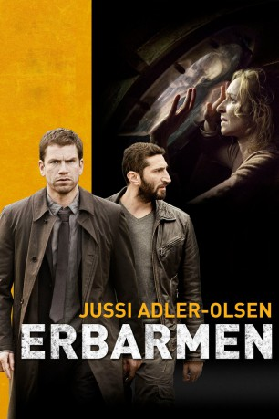

#112 Jussi Adler-Olsen 1 - Erbarmen
 
 IMDB-Wertung: 7.2 / 10
IMDB-Wertung: 7.2 / 10  Metascore: 62
Metascore: 62 
Nachdem Vizekriminalkommissar Carl Morck bei seinem letzten Einsatz in einen Hinterhalt geriet und verletzt wurde, nahm er sich eine zweimonatige Auszeit. Da er noch immer schwer traumatisiert ist, wird ihm ein neuer Assistent, Hafez el-Assad, zugeteilt und ihm ein Platz in der Abteilung für ungelöste Mordfälle verschafft. Anfangs scheint er hier nur seine Zeit tot zu schlagen, doch dann stößt er auf den mysteriösen Fall einer verschwundenen Politikerin.
Jahr: 2013
Dauer: 97 Minuten
FSK: 16
Land: Dänemark Studio: NFP Marketing & DistributionTonspuren:
Untertitel: Deutsch,
Auflösung: 1080p (1920×800) Größe: 4679 MB
Genre: Thriller, Krimi, Mystery
Regisseur: Mikkel Nørgaard
Drehbuch: Jussi Adler-Olsen, Nikolaj Arcel, Nikolaj Arcel
Soundtrack: Patrik Andrén, Uno Helmersson, Johan Söderqvist
Darsteller:
 Nikolaj Lie Kaas als Carl Mørck
Nikolaj Lie Kaas als Carl Mørck Troels Lyby als Hardy Henningsen
Troels Lyby als Hardy Henningsen Søren Pilmark als Marcus Jacobsen
Søren Pilmark als Marcus Jacobsen Fares Fares als Assad
Fares Fares als Assad Sonja Richter als Merete Lynggaard
Sonja Richter als Merete Lynggaard- Rasmus Botoft als Tage Baggesen
- Patricia Schumann als Søs Norup
- Mikkel Boe Følsgaard als Uffe Lynggaard
- Kenneth Carmohn als Mand på færge
 Marijana Jankovic als Tereza
Marijana Jankovic als Tereza Claes Ljungmark als Larsson
Claes Ljungmark als Larsson- Eric Ericson als Johan Lundquist
- Dorte Højsted als Lasses plejemor
- Per Scheel Krüger als Anker
- Øyvind B. Fabricius Holm als Død mand
- Divya Das als Nyhedsvært
- Anne Bærskog Hauger als Viggas Rasmussen
- Marie Mondrup als Helle Andersen
- Michael Brostrup als Børge Bak
- Jeff Pitzner als Beboer på Egely
- Lane Lind als Forstander på Egely
- Anton Honik als Jesper
- Camilla Slyngborg als Tv-journalist
- Marie Hammer Boda als Jespers kæreste
- Olivia Holden als Merete som barn
- Katrine Engberg als Meretes mor
- Betina Grove Ankerdal als Lis
- Bettina Strange Sandstrøm als Beboer på Egely
- Anton Jarlros Gry als Björne
- Morten Kirkskov als Lars Bjørn
- Jesper Riefensthal als Thomas
- Henrik Larsen als Leif
- Tilde Maja Fredriksen als Kvindelig pædagog
- Lucas Lynggaard Tønnesen als Lasse som barn
- Anna Sofie Helligsøe Haahr als Lasses lillesøster
- Claus Maack Bahnsen als Meretes far
- Ernst Boye als Uffe som barn
- Morten Thunbo als Lasses far
- Pernille Lyneborg als Ulla som ung
- Nynne Bojsen als Socialrådgiver
- Victor Marcussen als Lasses plejefar
- Sebastian Teschemacher als Lasses plejebror
- Bebiane Ivalo Kreutzmann als Lasses plejesøster
- Anders Dines Vinten als Daniel Hale som barn
- Tobias Stæhr Hansen als Dreng der får bank
- Peter Plaugborg als Lars Henrik 'Lasse' Jensen
- Magnus Millang als Daniel Hale
- Marie-Louise Coninck als Ulla Jensen
- Stine Prætorius als Læge
 Martin Boserup als Politimand , uncredited
Martin Boserup als Politimand , uncredited
Datei: X:\4-Tetralogie(A-K)\Jussi Adler-Olsen\Jussi Adler-Olsen 1 - Erbarmen (2013, FSK16, 1920x800).mkv seit 03.02.2015
Festplatte: HD Collection-3(N-Z)-6(A-Z)
 Es gibt insgesamt 7 Filme in der Gruppe '4-Tetralogie(A-K)\Jussi Adler-Olsen'
Es gibt insgesamt 7 Filme in der Gruppe '4-Tetralogie(A-K)\Jussi Adler-Olsen'